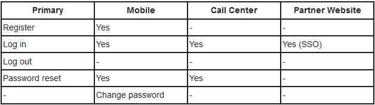

Summary
Even if the primary authentication mechanisms do not include any vulnerabilities, it may be that vulnerabilities exist in alternative legitimate authentication user channels for the same user accounts. Tests should be undertaken to identify alternative channels and, subject to test scoping, identify vulnerabilities.
The alternative user interaction channels could be utilized to circumvent the primary channel, or expose information that can then be used to assist an attack against the primary channel. Some of these channels may themselves be separate web applications using different host names or paths. For example:
- Standard website
- Mobile, or specific device, optimized website
- Accessibility optimized website
- Alternative country and language websites
- Parallel websites that utilize the same user accounts (e.g. another website offering different functionally of the same organization, a partner website with which user accounts are shared)
- Development, test, UAT and staging versions of the standard website
But they could also be other types of application or business processes:
- Mobile device app
- Desktop application
- Call center operators
- Interactive voice response or phone tree systems
Note that the focus of this test is on alternative channels; some authentication alternatives might appear as different content delivered via the same website and would almost certainly be in scope for testing. These are not discussed further here, and should have been identified during information gathering and primary authentication testing. For example:
- Progressive enrichment and graceful degradation that change functionality
- Site use without cookies
- Site use without JavaScript
- Site use without plugins such as for Flash and Java
Even if the scope of the test does not allow the alternative channels to be tested, their existence should be documented. These may undermine the degree of assurance in the authentication mechanisms and may be a precursor to additional testing.
Example
The primary website is:
http://www.example.com
and authentication functions always take place on pages using Transport Layer Security:
https://www.example.com/myaccount/
However, a separate mobile-optimized website exists that does not use Transport Layer Security at all, and has a weaker password recovery mechanism:
http://m.example.com/myaccount/
How to Test Understand the primary mechanism
Fully test the website's primary authentication functions. This should identify how accounts are issued, created or changed and how passwords are recovered, reset, or changed. Additionally knowledge of any elevated privilege authentication and authentication protection measures should be known. These precursors are necessary to be able to compare with any alternative channels.
Identify other channels
Other channels can be found by using the following methods:
- Reading site content, especially the home page, contact us, help pages, support articles and FAQs, T&Cs, privacy notices, the robots.txt file and any sitemap.xml files.
- Searching HTTP proxy logs, recorded during previous information gathering and testing, for strings such as "mobile", "android", blackberry", "ipad", "iphone", "mobile app", "e-reader", "wireless", "auth", "sso", "single sign on" in URL paths and body content.
- Use search engines to find different websites from the same organization, or using the same domain name, that have similar home page content or which also have authentication mechanisms.
For each possible channel confirm whether user accounts are shared across these, or provide access to the same or similar functionality.
Enumerate authentication functionality
For each alternative channel where user accounts or functionality are shared, identify if all the authentication functions of the primary channel are available, and if anything extra exists. It may be useful to create a grid like the one below:

In this example, mobile has an extra function "change password" but does not offer "log out". A limited number of tasks are also possible by phoning the call center. Call centers can be interesting, because their identity confirmation checks might be weaker than the website's, allowing this channel to be used to aid an attack against a user's account.
While enumerating these it is worth taking note of how session management is undertaken, in case there is overlap across any channels (e.g. cookies scoped to the same parent domain name, concurrent sessions allowed across channels, but not on the same channel).
Review and test
Alternative channels should be mentioned in the testing report, even if they are marked as "information only" and/or "out of scope". In some cases the test scope might include the alternative channel (e.g. because it is just another path on the target host name), or may be added to the scope after discussion with the owners of all the channels. If testing is permitted and authorized, all the other authentication tests in this guide should then be performed, and compared against the primary channel.
Related Test Cases
The test cases for all the other authentication tests should be utilized.
Remediation
Ensure a consistent authentication policy is applied across all channels so that they are equally secure.